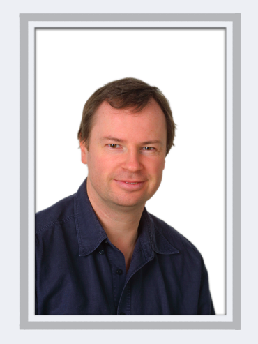
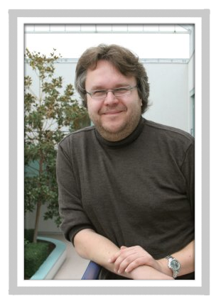

Systemic analysis of biological systems: lessons from a small single bacterium and a large complex communityEuropean Molecular Laboratory Lab, Heidelberg, Germany
|
Peer
Bork, PhD, is senior group leader and joint head of the Structural and
Computational Biology unit at EMBL, a European research organization
with headquarters in Heidelberg. He also holds an appointment at the
Max-Delbrueck-Center for Molecular Medicine in Berlin. Dr Bork received
his PhD in Biochemistry (1990) and his habilitation in Theoretical
Biophysics (1995). He works in various areas of computational biology
and systems analysis with focus on function prediction, comparative
analysis and data integration. He has published more than 400 research
articles in international, peer-reviewed journals, among them more than
45 in Nature, Science and Cell. According to ISI (analyzing the last 10
years), dr. Bork is currently the most cited European researcher in
Molecular Biology and Genetics. He is on the editorial board of a
number of journals including Science and PloS Biology, and functions as
senior editor of the journal Molecular Systems Biology. Dr. Bork
co-founded four biotech companies, two of which went public. More than
25 of his former associates now hold professorships or other group
leader positions in prominent institutions all over the world.
|
 |
He received the "Nature award for creative mentoring" for his achievements
in nurturing young scientists and was the recipient of the prestigious
"Royal Society and Academie des Sciences Microsoft Award" for the
advancement of science using computational methods. |
|
|
Analysis of whole-genome sequencing data from
paired tumor and normal genomesWashington University Genome Center, St-Louis,
MO, USA
|

|
Dr.
Elaine Mardis graduated Phi Beta Kappa from the University of Oklahoma
with a B.S. degree in zoology. She then went on to complete her Ph.D.
in Chemistry and Biochemistry in 1989, also at Oklahoma. Following
graduation, Dr. Mardis was a senior research scientist for four years
at BioRad Laboratories in Hercules, CA.
In 1993, Dr. Mardis
joined The Genome Center at Washington University School of Medicine.
As Director of Technology Development, she helped create methods and
automation pipelines for sequencing the Human Genome. She currently
orchestrates the Center’s efforts to explore next generation sequencing
technologies and to transition them into production sequencing
capabilities. Dr. Mardis has research interests in the application
of DNA sequencing to characterize cancer genomes. She also is
interested in facilitating the translation of basic science discoveries
about human disease into the clinical setting.
|
|
Dr. Mardis
serves on several NIH study sections, is an editorial board member of
Genome Research, and acts as a reviewer for Nature and Genome
Research. She serves as chair of the Basic and Translational Sciences
for the American College of Surgeons Oncology Group. Dr. Mardis
recently received the Scripps Translational Research award for her work
on cancer genomics.
|
|
University of Manchester, UK and Free University of Amsterdam, The
Netherlands

|
Hans Westerhoff is Professor of Systems Biology at
Manchester University and also Professor of Microbial Physiology (Free
University Amsterdam, VUA) and Professor of Mathematical Biochemistry
(University of Amsterdam, UvA) at the BioCentrum Amsterdam. He heads a
transnational research group on Systems Biology which spans the
Manchester Centre for Integrative Systems Biology (MCISB) in the
Manchester Interdisciplinary BioCentre (MIB) and the BioCentrum
Anmsterdam (see also http://www.bio.vu.nl/hwconf ). His research
interest focuses on how the interactions of macromolecules can lead to
biological functioning, and integrates quantitative expermentation with
mathematical analyses.
|
|
The
evolutionary significance of ancient whole genome duplications and
computational approaches to unveiling them
Flemish Institute of Biotechnology and University of Ghent, Belgium
|
Yves
Van de Peer is professor in Bioinformatics and Genome biology in
the Department of Plant Systems Biology at Ghent University, Belgium.
He is leading a bioinformatics group of about 35 people. Yves Van de
Peer has published about 250 papers in peer-reviewed journals and his
group is a center of excellence in the fields of gene prediction and
genome annotation, comparative genomics, and (top-down) systems biology.
|

|
|
Modeling protein
structure, function, and interactionsImperial College, London, UK

Professor Michael Sternberg is the
Director of the Centre for Integrative Systems Biology at Imperial
College (CISBIC) and Centre for Bioinformatics (CfB) at Imperial College
London and he holds the Chair of Structural Bioinformatics at Imperial.
Michael Sternberg’s research interest are protein bioinformatics and
the development of logic-based chemoinformatics. His group have
developed the Phyre server for protein structure prediction, 3D-Garden
for protein-protein docking, and Confunc/ 3DLigand Site for protein
function prediction. Recent work has developed methods to analyse the
interactome and pathways. The chemoinformatics modelling employs a
logic-based approach and is able to learn rules relating structure to
activity and then use these rules to identify novel active molecules. |
From large data to small networks
University of Regensburg, Germany
|
Rainer Spang is professor and chair of statistical bioinformatics at the University of Regensburg, Germany. His research focuses on modelling gene expression and signal disruption in human cancers. More recently, he addressed problems of reconstructing cellular information flow from molecular perturbation experiments. |
 |
|
|
|
|
|
|